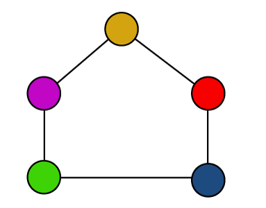
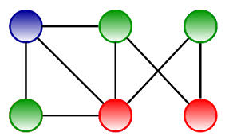

What is Vertex Coloring?
Vertex coloring is a method of assigning colors to the vertices (nodes) of a graph such that no two adjacent vertices share the same color. This concept is a key part of graph theory and is used to solve various problems where conflict-free assignments are needed. The minimum number of colors required to color a graph is called its chromatic number. Vertex coloring is typically applied to undirected graphs, although it can also be extended to directed graphs in specific cases.
Why is Vertex Coloring Important?
Vertex coloring has several practical applications in real-world scenarios, such as:
- Scheduling Problems: Assigning time slots to tasks, exams, or employees in a way that avoids conflicts.
- Map Coloring: Ensuring that no two neighboring regions on a map share the same color, which can be used in geographical applications.
- Register Allocation: In compiler design, allocating a limited number of registers to variables in a program without conflicts.
- Frequency Assignment: Assigning different frequencies to nearby radio stations or cell towers to avoid interference.
- Puzzle and Game Design: Using vertex coloring to design puzzles like Sudoku, where numbers or colors need to be placed in a grid following certain rules.
Examples of Vertex Coloring

